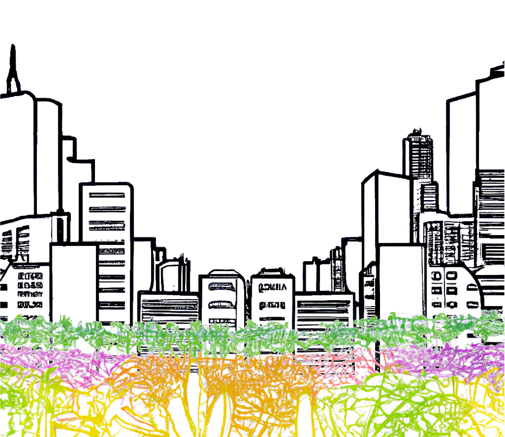

This project is founded in a love of food, as well as a profound respect for the multiplicity of food. Food is so many things: food is culture, food is community, food is nourishment, food is resistance, and food is power. And the greatest power of food is that it empowers us to take advantage of all of the things that food is such as celebrating our culture, connecting with our communities, feeding our bodies and souls, and standing for what is right. This is why food, and as an extension food access, is just not a necessity for survival, but a necessity for positive growth on both micro and macro levels.
I have fortunately known the power of food and food access intimately since I was a child growing up in Pittsburgh, PA where we had two fruit trees in our backyard. These trees were foundational in developing my love for making pies, as an endless supply of crabapples and peaches begs the question of what to do with them. Believe me... I'm not just saying this, I actually now have a tattoo of a piece of pie on my wrist.
But that wasn't it either. When I was in high school, my mom set out to add a garden of raised beds among our fruit trees, and in that garden she went on to grow copious amounts of kale, zucchini, squach, blueberries, and so much more. It is because of the access that I had to all of these fresh foods that I was able to explore and learn how to prepare each item, developing my tastes as well as my ability to cook. Now, access didn't gaurantee that I developed a love for all foods (swiss chard is still a vegetable I would rather avoid), but I am sure looking back that there are some foods I would have never grown to love had I not been able to simply go out and pick them from my backyard.
So, I say all of that because I know how easy it is to take food for granted. In New York City alone, it is estimated by City Harvest that there are 2.4 million men, women, and children who are struggling to make ends meet, with 1.5 million of those individuals being "food insecure".1 For context, that accounts for more than 16% of the city's total population, meaning that 16% of New Yorkers lack access to the power of food.
Upon discovering this, I set out to learn more about our food system, which led me to the Hunts Point Distribution Center, whose sales account for around 60% of the produce sales within New York City per year.2 Having a central critical distribution center such as this poses a clear threat to our city's food supply, as any event preventing the Center's ability to serve the city would immediately eliminate more than half of the city's fresh food. And that's not even considering that a significant amount of our population is unfed regardless.
So I turned my focus within the city. I looked into the Hyper Local Food Movement, which has been making great strides in large yet notably less-dense cities such as Portland, ME and Washington, D.C. This movement boasts advantages such as:
It turns out that I'm not alone in having questions surrounding urban agriculture with New York City, as Mayor Adams announced the Mayor's Office of Urban Agriculture in September 2022 with the goals of "expand[ing] the supply of healthy and locally grown food, creat[ing] jobs, and mak[ing] our city more resilient".4 While I was unfortunatley unable to meet with a representative from the New York City Office of Urban Agriculture, I was fortunate to speak directly to members of the Portland, ME and Washington, D.C. urban agriculture programs.
In Portland, ME, the city contracts Cultivating Community5 to run their farming programs. Through these programs, Cultivating Community provides locations for community gardens where the soil and air quality have been tested and remediation has been performed if necessary. These locations also are provided with fences, water which is turned on and off by season, a tool shed with communal tools, and a composting area.
In additon to size, locations which serve communities that are most in need of food access are prioritized, and the distribution of development grants helps facilitate that process. Cultivating communities currently only puts gardens into existing parks and open spaces, and they have found great success placing community gardens next to athletic fields given the amount of sunlight and open space required to place such a space. All locations feature in-the-ground soil farming.
Participants pay for a garden plot or half-plot via a yearly fee for which there is a sliding scale and scholarship opportunities if needed. If you are fortunate enough to be able to afford more, you are encouraged to contribute in support of the success these programs. In addition, all participants are required to volunteer six hours a season to help maintain the garden. This volunteer work includes things like flipping the compost, organizing the toolshed, and assisting other gardeners.
Community-based models and participations are encouraged by Cultivating Communitites. In one garden, there is a common share model where the work is divided evenly between several individuals rather than a by-plot basis. This model allows participants who are new to growing food or new to the area to learn about urban agriculture and become more immersed in their communitites. In all gardens, individuals are encouraged to donate a portion of their crops for nonprofits and food banks, and there is a cooler at every garden where these organizations pick up food for their missions.
You can grow more than you think in a single plot. Every year, Cultivating Community distributes a survey to ask how much food each participant grew and how their participation affected their family's ability to access food.
In Washington, D.C., the Office of Urban Agriculture is held within the D.C. Department of Energy and Environment. As of today, there are 214 urban agriculture locations within the District, with the vast majority being urban farms. These locations are offered through a regular lease program with utilities, although in some cases locations on park land might have water fee subsidies.
The most important metrics when assessing potential locations are water access and light access for crop yield. Each lot has the soil tested to ensure viability before it is offered for lease, but utility and water lines are not included in every location and need to be installed to ensure successful crop yield. This can be a significant amount of work on the applicant, which has been known to affect who can become an urban farmer, but programs are continuing to be put in place to ameliorate this.
All urban farms in Washington, D.C. are individually managed, and the majority of participating farmers have been working in the space for over 10 years. This has allowed the District to develop a robust network of urban farmers, which is extremely beneficial to the overall success of the program. The overall goal of the program is to help build resources for urban farms and agriculture. Current programs in support of this support this goal are:
The majority of successful farms are owned on district-owned park land. Because for-profit organizations cannot profit off of government owned land, these farms are primarly nonprofit. Some notable feedback that the program has received is that when parcels of land embedded in residential neighborhoods weren't first offered to the residents for participation, the community rejects the urban farm.
I had the immense pleasure of attending this year's Rooting D.C. conference, which afforded me the opportunity to meet with community members and urban farmers within the D.C. area who could speak to the benefits and drawbacks of the program. Overwhelmingly, the focus was on empowerment. Drawing on the history of urban farms and gardening, participants in this conference reflected on how growing your own food has been used as a form of resistance. When community gardens became trendy in the 2000s, the friction between trend and need forced many necessary urban agriculture locations out of business.
And when the trend faded and participants dwindled, there was no more food being grown in these locations. Now, as urban agriculture is returning to the urban environment, facilitators have the opportunity to reposition their approach to implementing these programs. For them to best succeed they need to center communities and community members, and ask the important questions such as: Do you want a farm next door?
On a policy side, land access is the key issue for prospective urban farmers. Despite the programs such as the USDA urban agriculture funding grants and land lease programs, it is difficult to understand the process from the outside and get your foot in the door. The time that it takes to apply for these programs translates into money, which only further imbalances the equity of who is able to become an urban farmer. However community members are willing to see this through, and hopeful that these programs will continue to be expanded and resources will continue to become more readily available to support this process.
From a social standpoint, who grows the food matters. When community members are empowered to grow their own food, they are able to include culture on the menu. Additionally, when community members are in charge of their own food system, they dont need to fear that it may suddenly disappear without notice.
This project aims to support the future of urban agriculture in New York City by giving community members the ability to explore the possible locations for urban farms and communnity gardens throughout all five boroughs. Furthermore, it is my goal to center the mission of addressing food insecurity within this project to ensure that future locations are prioritized where they are needed most. With this in mind, this project seeks to answer the questions:
First and foremost, I needed to develop a dataset of potential locations for urban agriculture witin New York City. I began by looking at the dataset referenced on the Office of Urban Agriculture's website: "City-owned sites that are available and potentially suitable for urban agriculture" available on NYC Open Data.6 Disappointingly, there were only 29 potential locations on this list.
Instead, I developed a dataset of my own. Using PLUTO data, I compiled the locations of all of the vacant lots, open spaces without recreational facilities, and unlicensed parking lots throughout the five boroughts of the city.7 Through this preliminary dataset, I ended up with over 8,000 potential locations accounting for more than 30,000 acres of lots potentially suitable for urban agriculture throughout the city.
To make the best assessments for potential locations, I needed to determine which metrics were necessary for evaluating each lot for urban agriculture. For this, I relied on the insight I received from the individuals which whom I spoke as well as my own personal experience with growing . As a result, I was able to finalize my metrics list to the following:
At the end of this process I ended up with:
When considering the best format for communicating this data, I had three primary goals:
No dataset is perfect, and city-scale spatial data is a perfect example of that. The built environment is a dynamic space that cannot be categorized cleanly. For instance, what is listed as a vacant lot can also be a giant pit in the ground, as I came to find when I visited one of the potential locations on my list.
This location has been an inactive build site since before I moved to New York City. Data is a picture of one recorded moment in time, and so this tool will not be able to function similarly this time next year without being updated. There is no avoiding the immense amount of work that it would thus take to truly evaluate the possibilities for urban agriculture within the city, however that is not a reason not to do it.
In addition to limitations in the nuances of data, I mentioned above my calculation of how much each potential location addresses food insecurity. Food insecurity is phrase that is used, but as mentioned above it generalizes a series of complex circumstances. Similarly, this metric is generalizing by calculating the number of individuals served relative to proximity to measured food insecurity within Feeding America data. This calculation was a series of objective decisions on my part, and as such it must be recognized as imperfect.
Overall outcomes of a location is not just given the possibilities, but given those that step up and get involved. It is dependent on how much a community gathers around a potential location to integrate it as a vital resource. And I can't possibly predict the possibilities of that.
This project does not aim to present a singular solution for NYC’s food system. Rather, it seeks to support a growing urban agriculture program grounded in community action and need. The first of its kind, this tool opens the space of spatial analysis to those who don't have the skills to otherwise explore it.
It is my hope that the results of this project will support and inspire the future of expanding urban agriculture within New York City on both a local and city-wide scale. In the future, it is my hope that this tool can be expanded to be a long-term resource for this and other cities to explore the possibilities of urban agriculture.
While this project is focused specifically on the identification and evaluation of potential locations for urban agriculture in New York City, throughout my research I have come across several resoures that will be beneficial for individuals pursuing agriculture. I am listing them here to accompany the work that I hope follows from the Little Apple:
The Little Apple is built to be rebuilt. The framework of this app is in Vue, and as such it can be quickly and easily updated in order to visualize urban agriculture within other cities. All you will need data-wise is:
You can get all of the code to do this on my Little Apple GitHub page and transfer the data yourself, or you can reach out to me and I will be happy to help. All I ask is that if you do you reach out and share with me how you are using the Little Apple!
As I mention above, simply convering all of the neighborhood 3D models of New York City was a project on its own. These models are extremely dense, and sunlight analysis using one of them was next to impossible, let alone conducting sunlight analysis on an entire borough. But the data needed sunlight, and so I went through the multi-week process of downloading each file, converting all of the surfaces to meshes, joining those meshes, and then combining each mesh by borough in order to create a (still very heavy) much lighter 3D file on which I could run sunlight analysis.
I don't want you to have to do the same. At this link, you can download the 3dm files for every borough in the city, as well as one file containing the buildings for the entire city. Each file is geocoded so you can easily import other data for analysis.
1City Harvest. “Food Insecurity.” Accessed March 25, 2023. https://www.cityharvest.org/food-insecurity/.
2Editor, NYC Food Policy. “Hunts Point Distribution Center: An Overview - NYC Food Policy Center.” NYC Food Policy Center (Hunter College), January 10, 2018. https://www.nycfoodpolicy.org/hunts-point-distribution-center-brief-overview-spotlight-produce-market/.
3Ourgoodbrands. “The Amazing Advantages of Hyperlocal Food Movement,” July 7, 2020. https://ourgoodbrands.com/advantages-hyperlocal-food-movement/.
4Magazine, Harlem World. “Mayor Adams Appoints Qiana Mickie As Director Of New Mayors Office Of Urban Agriculture.” Harlem World Magazine (blog), September 23, 2022. https://www.harlemworldmagazine.com/mayor-adams-appoints-qiana-mickie-as-director-of-new-mayors-office-of-urban-agriculture/.
5Cultivating Community. “Cultivating Community | Empowering People Through Food.” Accessed May 2, 2023. https://www.cultivatingcommunity.org/.
6NYC Open Data. “City-Owned Sites That Are Available and Potentially Suitable for Urban Agriculture (Local Law 46 of 2018).” Accessed May 2, 2023. https://data.cityofnewyork.us/Environment/City-owned-sites-that-are-available-and-potentiall/qchy-end3.
7“PLUTO and MapPLUTO.” Accessed May 2, 2023. https://www.nyc.gov/site/planning/data-maps/open-data/dwn-pluto-mappluto.page.
8“Map the Meal Gap Data | Feeding America.” Accessed May 2, 2023. https://www.feedingamerica.org/research/map-the-meal-gap/by-county.